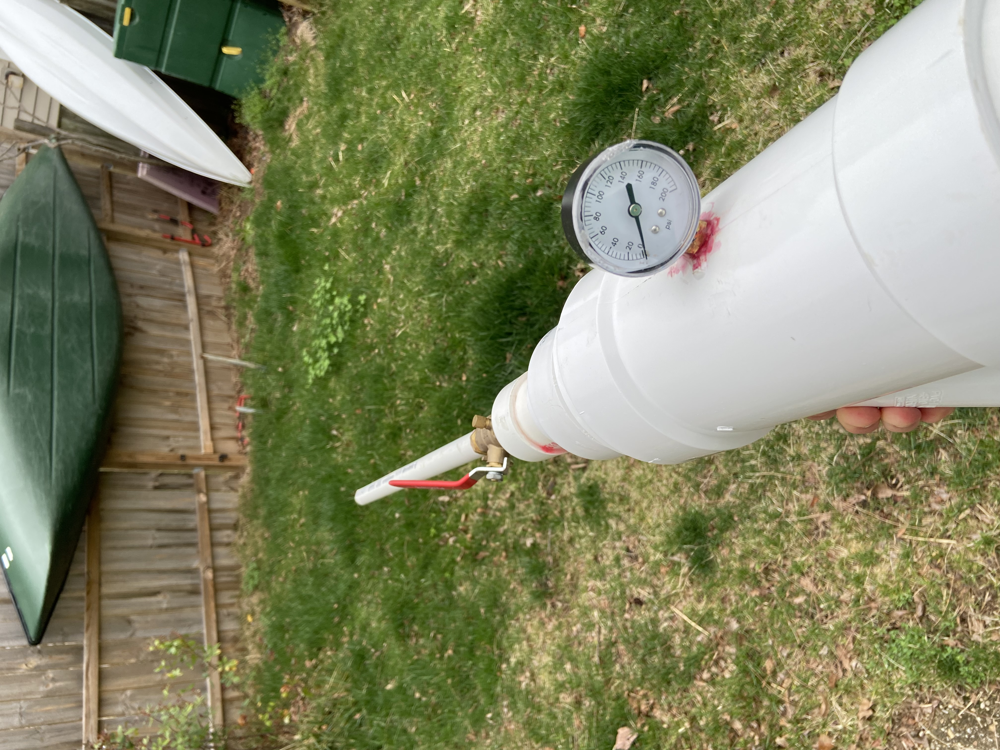
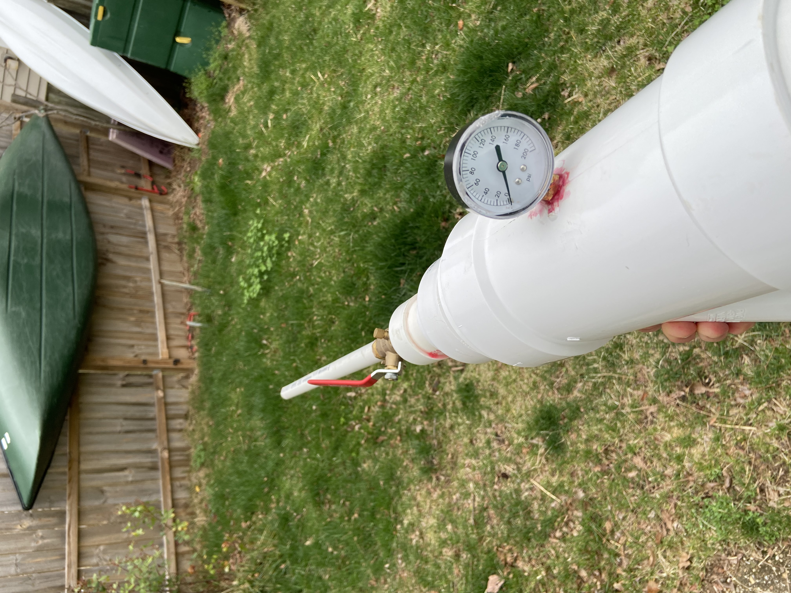

The Mark II
History
The MK2 was the big bother to the MK1 and MK1.1 had a 2 foot barrel and a much larger
pressure chamber, some might have said it was too big hint hint. But the MK2 with its leaks and
slow valve was still able to push the ball towards mach 1 topping out at an impressive 333.3m/s
and an impressive distance of 57 meters. Unlike the MK1 and MK1.1 data was recorded.
Data Table
| Degrees | Average Velocity (m/s) | Range (meters) |
|---|
| 5 | 333 | 1964.86 |
| 45 | 333 | 11315.2 |
| 80 | 333 | 3870 |
Pictures
 
